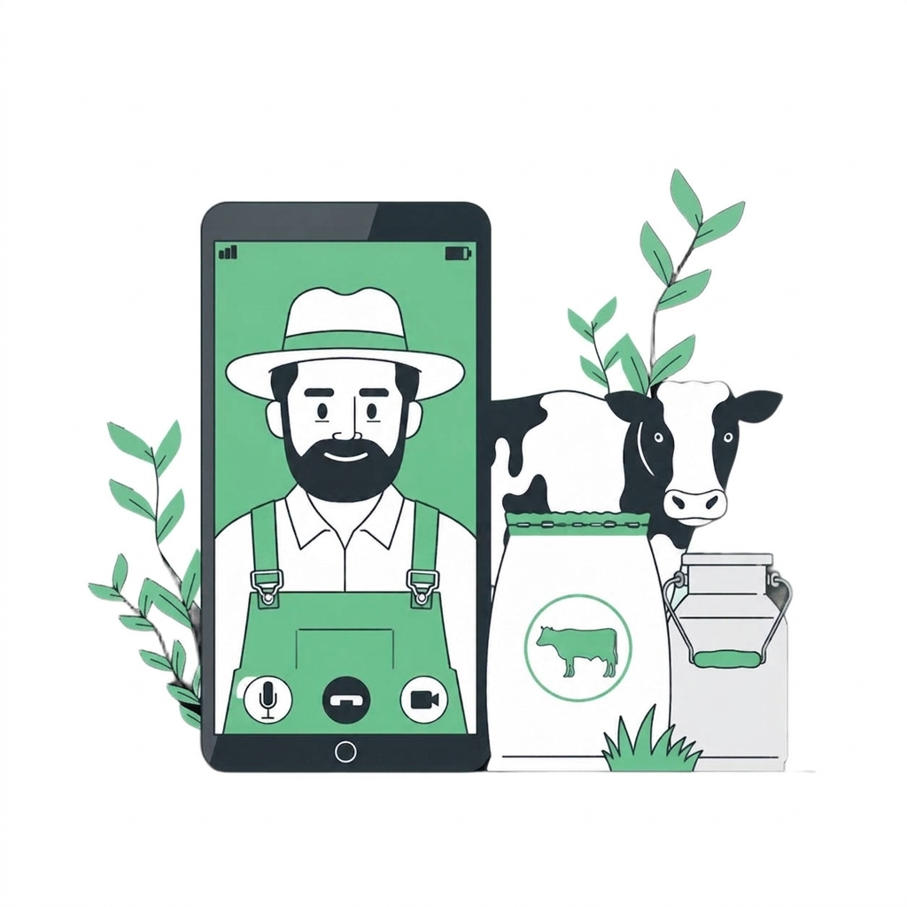
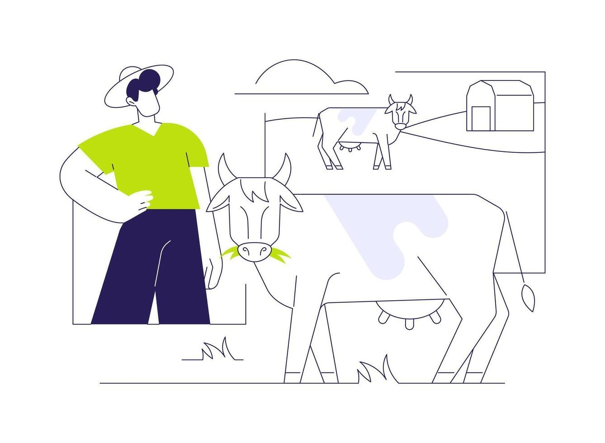
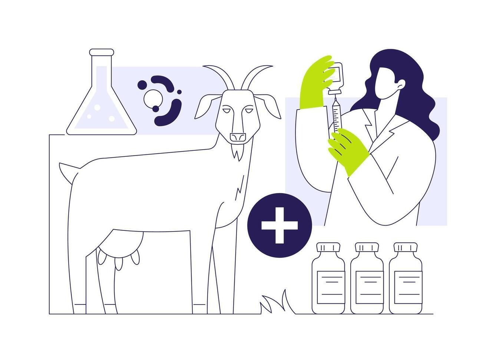
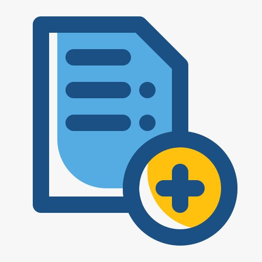
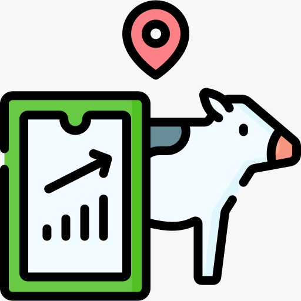
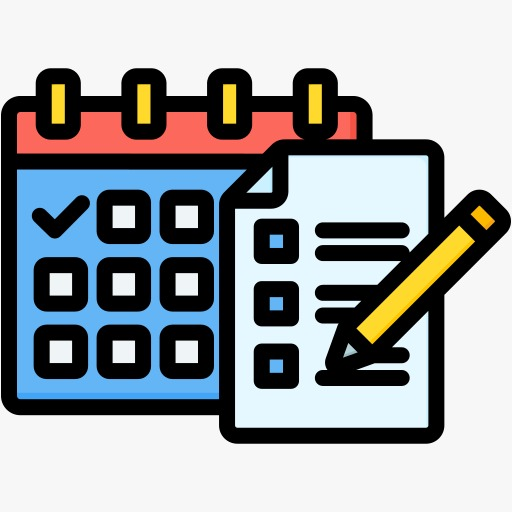
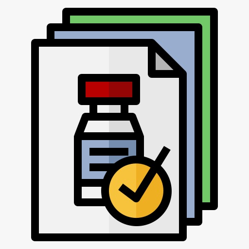

Básico
S/ 29.90 / mes
Ideal para pequeños productores.
- Hasta 50 animales
- Registro de historial sanitario
- Control de alimentación básico
- Reportes generales
- Soporte por correo
Plataforma SaaS diseñada para ganaderos y médicos veterinarios
Vantara es una startup peruana de tecnología agrícola fundada por estudiantes de Ingeniería de Software de la Universidad Peruana de Ciencias Aplicadas (UPC). Fue creada para resolver los principales desafíos del sector ganadero mediante herramientas digitales accesibles que permiten gestionar el ganado de forma eficiente, trazable y sostenible.


Hatarium es una plataforma SaaS intuitiva que le permite controlar sus operaciones ganaderas en tiempo real. Puede registrar la salud, alimentación, ciclo reproductivo y asignación de lotes de sus animales desde cualquier lugar.
Hatarium es una herramienta clínica integral que facilita la gestión del trabajo médico en campo y gabinete. Centraliza historiales clínicos, agiliza el registro de diagnósticos y permite llevar un control estructurado de tratamientos y citas.


Cree historiales clínicos individuales y organice fácilmente sus animales por lotes de manejo.
Asigne planes de alimentación y supervise el ciclo reproductivo (preñez, parto, secado y destete).
Reciba recordatorios sobre vacunaciones pendientes y prevención de riesgos sanitarios.

Revise el historial médico completo del ganado de sus clientes en cualquier momento.

Reciba solicitudes de atención médica y programe sus visitas técnicas de forma organizada.

Emita diagnósticos sobre el terreno, prescriba tratamientos y registre la aplicación de vacunas.
Elige el plan que mejor se adapte a las necesidades de tu ganadería.
S/ 29.90 / mes
Ideal para pequeños productores.
S/ 49.90 / mes
Para un control completo de tu ganadería.
S/ 89.90 / mes
Todas las funcionalidades para tu operación.
Estudiante de Ing. de Software
Estudiante de Ing. de Software
Estudiante de Ing. de Software
Estudiante de Ing. de Software
Estudiante de Ing. de Software